| 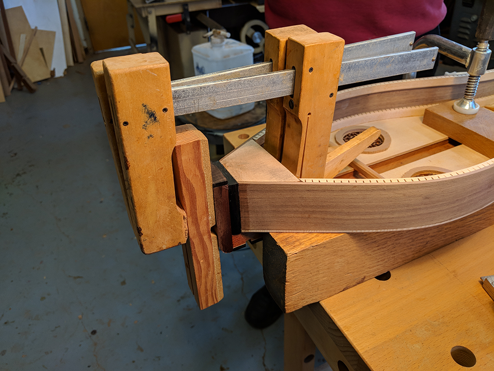 | 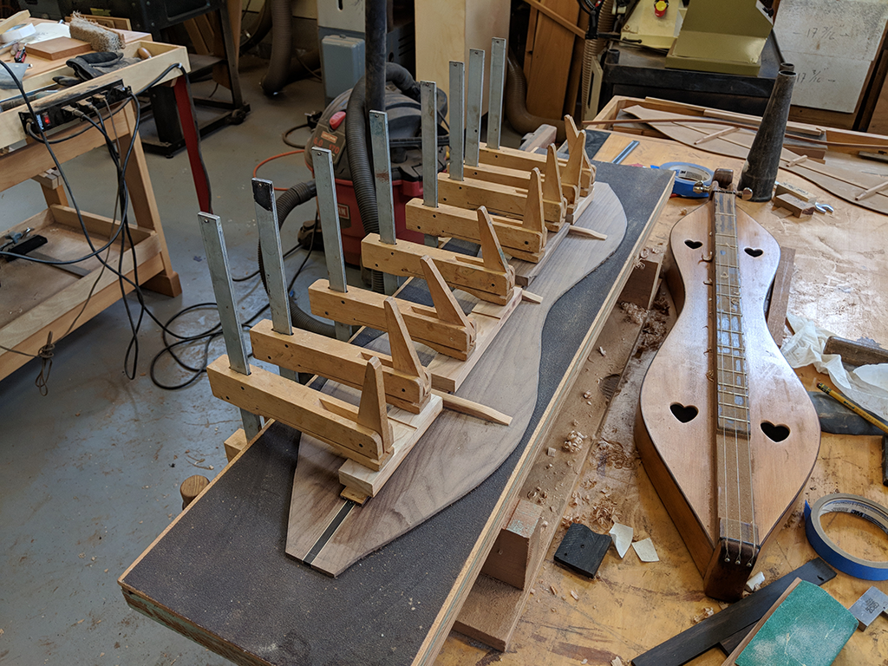 | 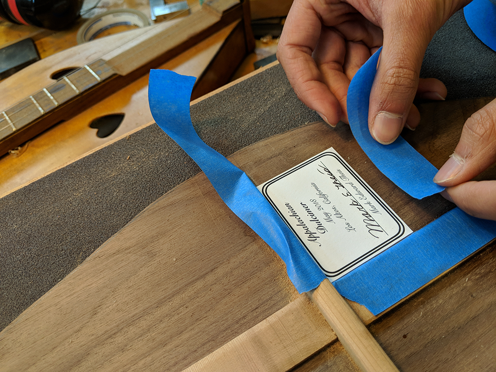 |
|---|---|---|
| 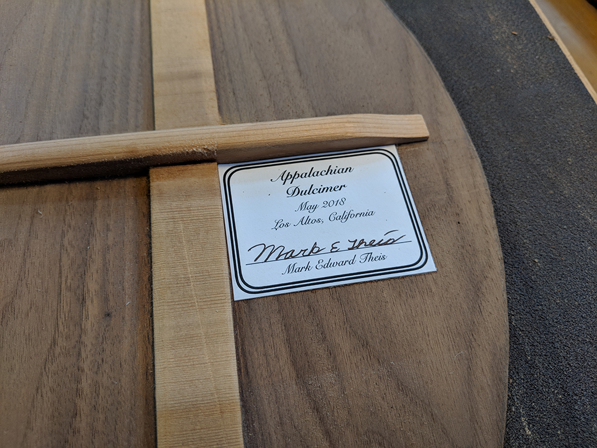 | 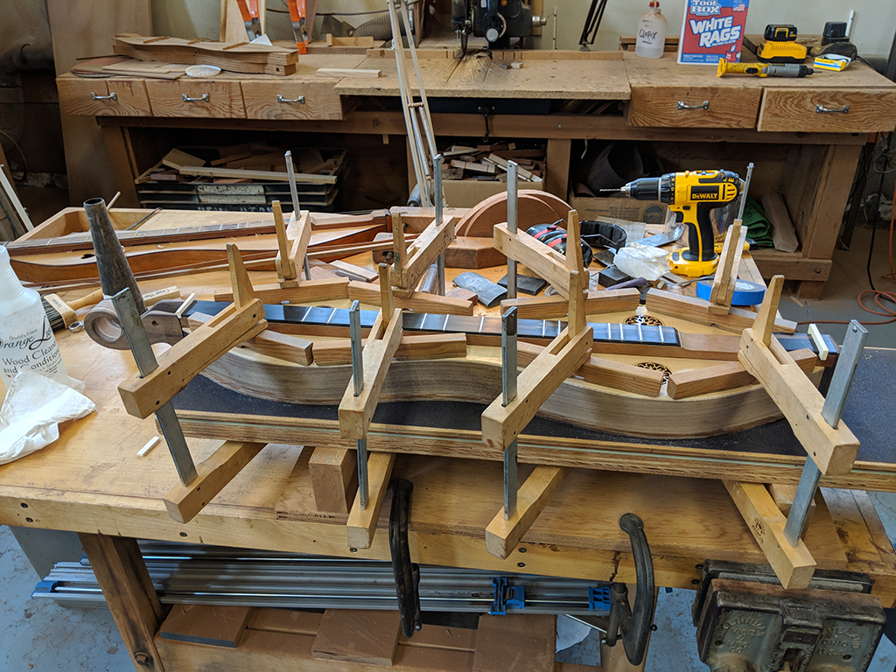 | 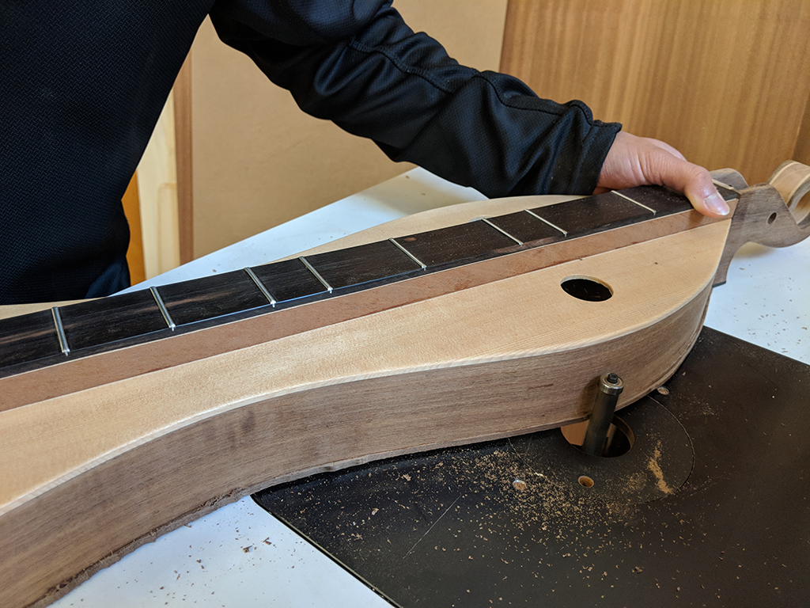 |
Update 6: Out with a Bang!
By Mark on May 22, 2018
Well...spoiler...I finished my dulcimer!!!! I am so happy to have built my first musical instrument. Of course I will still go over each step I took, but I wanted to take a small moment to celebrate.
I've also done a lot of relfection on my time with Father Martin. I now realize that he's spent over 60 HOURS with my in the workshop this semester. That's insane! I'm so thankful that he's made the time to meet with me. I could have never done this without his guidance.
What's Been Built
At the last project status update I had done a ton of work on my instrument (as always). I won't go into too much detail, but I had finished the construction on the top, cut it out to fit the shape of the dulcimer, and attached it. I then moved onto the back and pretty much built that in its entirety. I then started the final assembly, attaching the headstock and fretboard.
Since then, I had to build a tail piece. This is relatively small, but it is where the strings attach at the bottom and took decent thought. It turned out to be a simple piece of walnut the curves down into a piece of ebony. It is designed to match the headstock. Once this was built, I attached to the bottom of the instrument.
I also matched the head stock to where I would soon mount it. I drilled a hole in the end block and the corresponding location on the headstock. Although I will epoxy the headstock in place, I will add a screw into the hole which will help to clamp the headstock to the sides when I mount it.
The next step was the back of the instrument. For this, I used a book match design. This means the two halves of the back mirror one another (in symmetry, shown in picture 12 and 16). I also added an ebony strip in the center which helps to contrast the walnut and match the fretboard and other accents throughout the instrument.
Similar to the top, the back has struts that help to keep it together. I curved my struts which give the back a slight bow. This was a stylistic choice. Not required, but seen in many high end guitars and strung instruments.
I moved onto the final piece that I needed the make: the tail piece. It is made from a simple piece of walnut, and it holds the strings at the bottom of the instrument. At the same time, I also glued the fretboard and the headstock to the body. Here, I saw the start of the end. My excitement grew everyday!
| 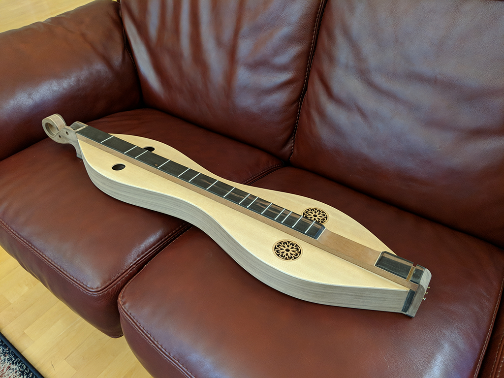 | 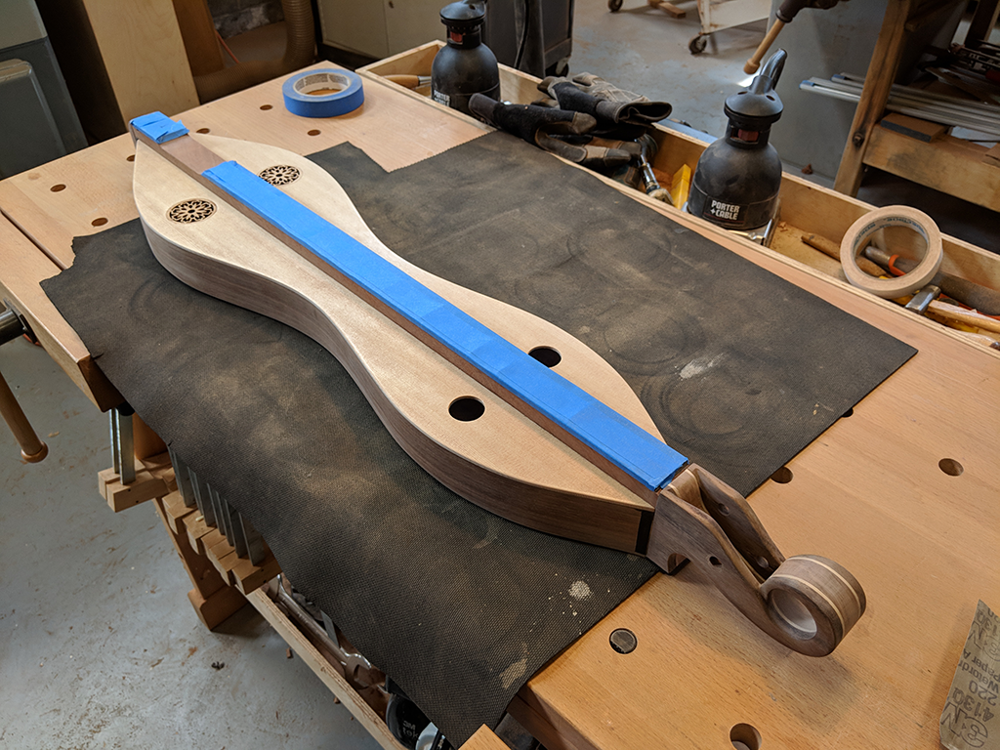 | 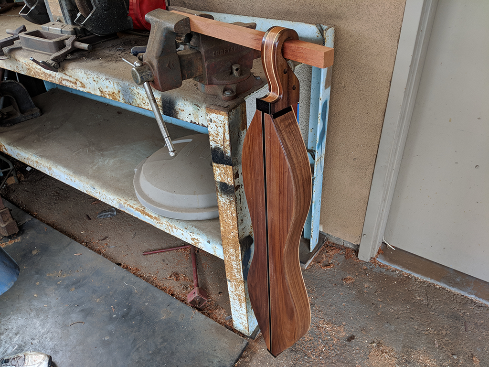 |
| 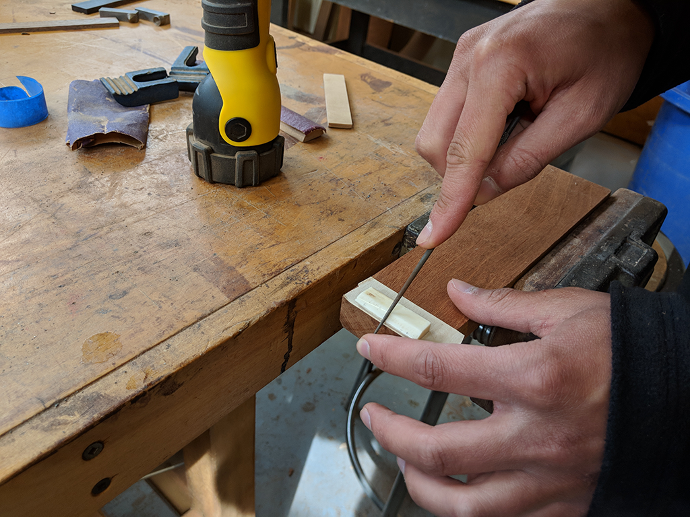 | 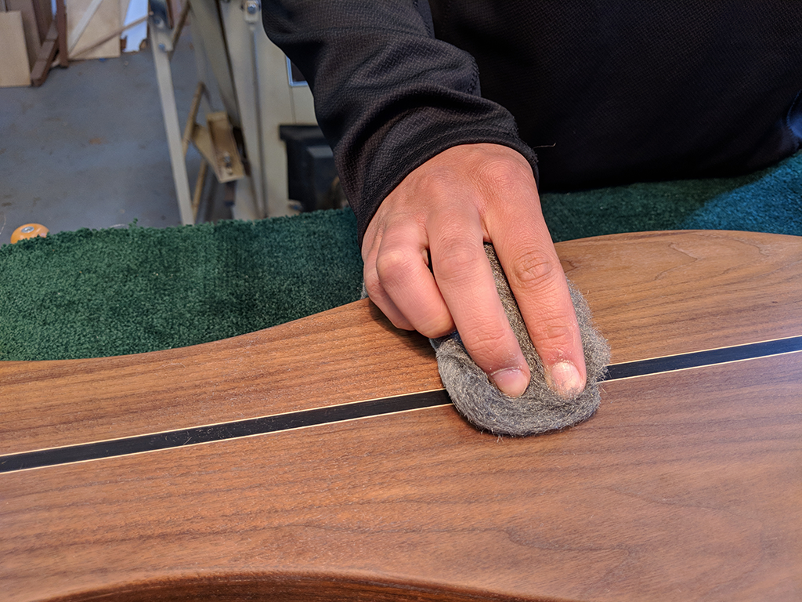 | 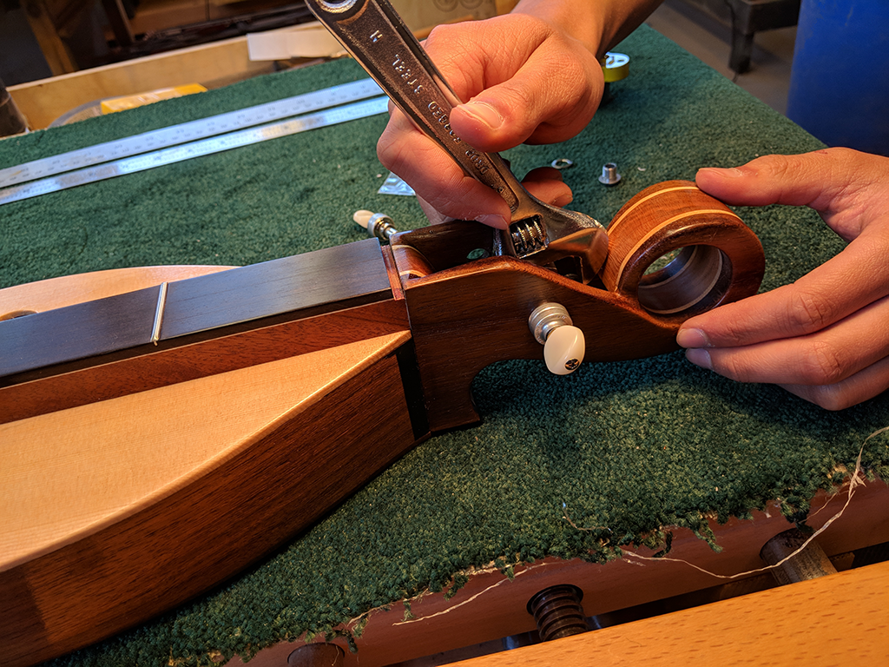 |